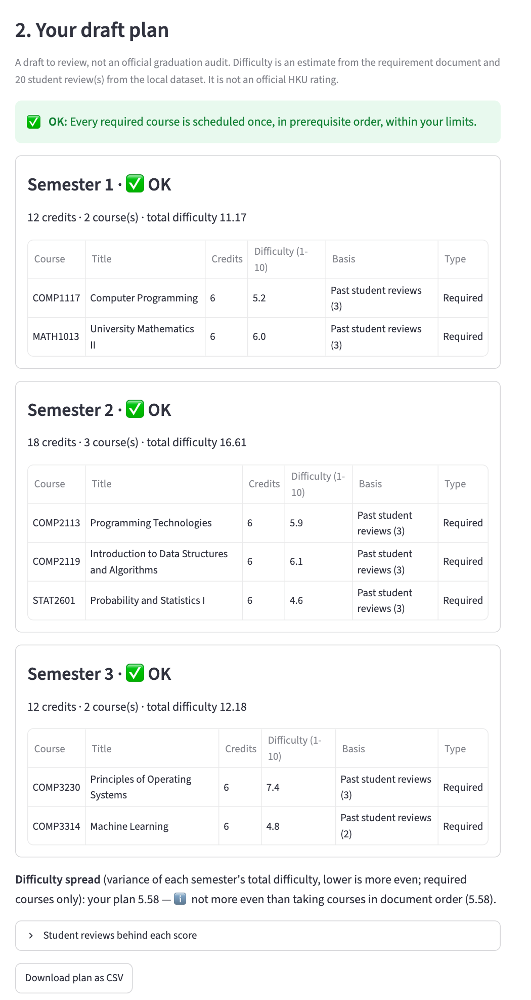
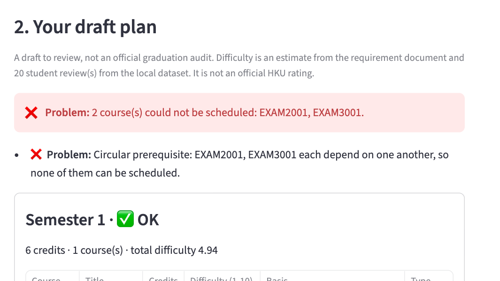

What to take is published. When to take it isn't.
HKU Course Planner reads your programme's requirement document and drafts a semester-by-semester plan, spread so no semester carries far more than the others. It runs on your own computer and sends nothing anywhere.
This is a real run, not a mock-up. Ten physics and maths courses from one of our test documents, at most 24 credits and 5 courses a semester. Compare our plan with taking courses in the order the document lists them, then select a course and move it. Like the app, the page never refuses a move. It tells you what broke.
The gap
HKU publishes what each programme requires. It does not say when to take those courses, or how heavy a given semester will feel. Students fill the gap from memory, a spreadsheet or a short chat with an adviser, and too often learn a semester is overloaded after they have enrolled.
Programme pages tell you what to take. RIC tells you how hard a course feels. Nothing turns either one into a plan you can follow, and we could not find a tool that reads the requirements, brings in course reviews and spreads the courses by workload. This is our own idea, not adapted from the course topic list. It came out of planning problems we and other HKU undergraduates kept running into.
It is for
Undergraduates who already know their programme and want a draft plan they can review and edit.
It is not for
Graduation audits, replacing an academic adviser, double majors, transfer credit or requirement waivers.
How it works
-
It reads the requirement document
Upload a PDF, plain text or CSV, or paste the text. The parser pulls out each course with its credits, assessments and prerequisites. It copes with four layouts, even mixed in one file: labelled blocks, table rows, course-description pages and plain lists under headings like "Core courses" or "Disciplinary Electives".
What it cannot check, such as a prerequisite written as "Level 2 in HKDSE Mathematics", becomes a visible warning. It is never dropped quietly or guessed.
-
It looks up reviews from a local file
Reviews come from a CSV that sits next to the app. The app never goes online for them and never asks for an RIC or HKU password. Chinese reviews are translated once, with an offline model, when the dataset is built. The app reads only the finished file, and keeps the original wording beside each translation.
-
It scores each course from 1 to 10
Credits count for 35%, graded assessments for 35% and reviews for 30%. Reviews are averaged with a trimmed mean, so one extreme rating neither decides the score nor gets thrown away. With no reviews, the other two weights are rescaled and the course is labelled review-free. This calculator uses the same formula as the app.
5.2out of 10, from past student reviews -
It builds the plan
First it checks which courses can ever be scheduled: circular prerequisites, missing prerequisites and courses bigger than a semester are named, not skipped. Then it orders courses by prerequisites, finds the fewest semesters that fit your limits, and moves courses around inside that length to even out each semester's total difficulty. The result is compared with the document-order baseline you saw at the top.
-
You adjust it, and every change is re-checked
Move a course, add an elective, or give a course your own difficulty rating, which replaces the estimate. Prerequisites and load are checked again after each edit. The plan downloads as CSV.
See it run
The app ships with a short, fictional Computer Science programme as its sample document. On a first run, pressing Build my plan should give you:
- A note that it loaded 20 reviews covering all 7 courses.
- A green banner saying every required course is scheduled once, in prerequisite order, within your limits.
- Three semesters: COMP1117 and MATH1013; then COMP2113, COMP2119 and STAT2601; then COMP3230 and COMP3314.
Recorded walkthrough


Run it yourself
You need Python 3.10 or newer. There is no account, no API key and no database to set up.
git clone https://github.com/kooki1000/AILT9019-Project-Group-36.git cd AILT9019-Project-Group-36 python3 -m venv .venv source .venv/bin/activate # on Windows: .venv\Scripts\activate pip install -e ".[dev]" streamlit run src/course_planner/app.py
The app opens in your browser. Leave Use the sample document selected and press Build my plan. To use your own programme, choose Upload a file and give it the faculty's syllabus PDF. If a PDF lists far more courses than one student takes, the app asks which ones you plan to take.
To check the install, run the tests, or see how the parser reads a syllabus without opening the app:
python -m pytest -q python -m course_planner.evaluation tests/fixtures/requirements python -m course_planner.syllabus_report path/to/syllabus.pdf
The README covers the review file format, where your data is stored (a local SQLite file you can delete from inside the app) and the agent-skill version of the parser.
Does it work?
Before testing we fixed what "works" means, and published it in the proposal. These are the results against that bar, including the part we cannot claim.
Every required course appears exactly once, none comes before its prerequisite, and no semester goes over the limit. The proposal needed 4 of 5.
The proposal needed 4 of 5. The one tie is the smallest document (6 courses), which has nothing to balance. The chart shows each plan's spread against the baseline's.
The bar was 95% of courses and prerequisite groups extracted correctly. These documents are ones we wrote, some shaped like real syllabuses, each with hand-written answers to compare against. That shows the layouts work. It says little about any given faculty's file.
BEcon, BEng (CompSc), BEng (DASE), BEng (CE, EE and ElecE), BA, BJ, BJ (MAI), BSocSc, LLB, BA & LLB and the ENGG regulations. We checked the output against the PDFs and fixed what broke. There are no hand labels for these, so we do not report a percentage.
Circular prerequisites and courses that can never fit are reported in words, as in the screenshot above. A course with no reviews is scored from the document and marked review-free.
They cover the parser, prerequisite logic, scoring, planner, CSV export and the Streamlit interface itself.
Where it falls short
- The reviews in the repository are made-up demonstration data. Real RIC reviews need permission to collect and reuse, and we have not got that yet. Until then the difficulty score is built on invented ratings.
- The score uses each review's 1 to 5 rating. It does not read the review text, and translation has not been tested on real colloquial Cantonese.
- Most syllabuses list few or no prerequisites. BEcon lists none, so a plan can put a final-year course in semester 1. Treat the order as a starting point.
- Catalogue-sized documents, such as the BA, can't be planned without your course list. Some options groups without a clear heading count as required.
- Prerequisite checks cover course codes. Year standing, department approval and exam grades are reported, not enforced. Semester availability and timetable clashes are out of scope.
- Not built: a second review source to cross-check RIC, and the small study with HKU students that the proposal listed as a stretch goal.
The score is an estimate from past student reviews and the requirement document. It is not an official HKU rating, and the plan is not a graduation audit. Check it against the current programme rules and with an academic adviser.
How it was built
Most of the code was written with an AI coding assistant (Claude Code) and went through pull requests before merging. The report has the full AI-use disclosure. The repository holds no passwords, API keys or personal data, and the app keeps uploaded documents only on the machine running it.